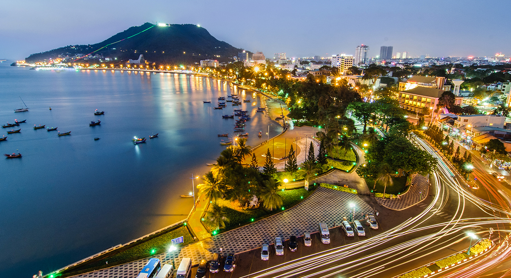
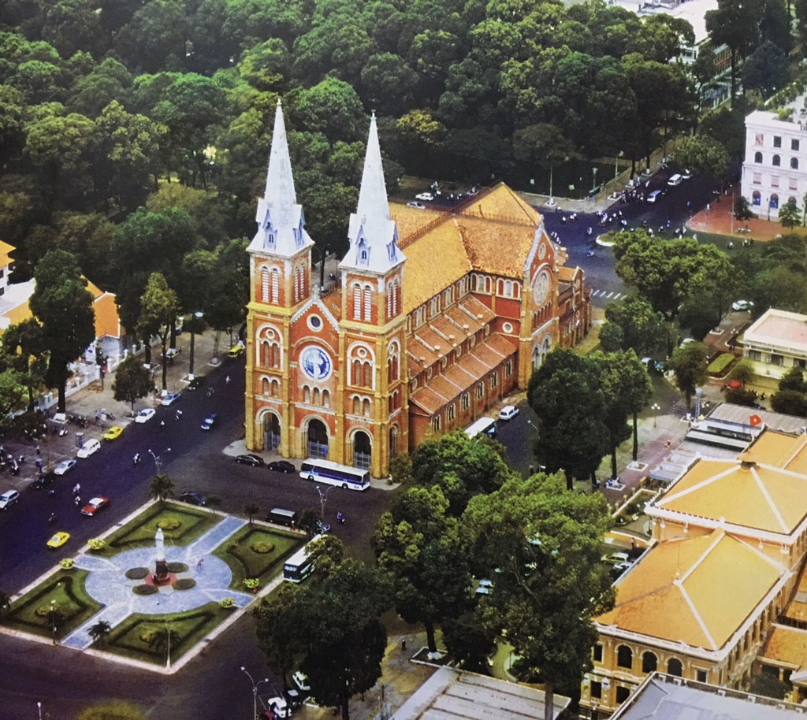

Những Địa Điểm Du Lịch 🛫
1.Đảo Phú Quốc

Phú Quốc là một hòn đảo nằm trong vịnh Thái Lan và là đảo lớn nhất Việt Nam.
Về hành chính, đảo Phú Quốc cùng với các đảo nhỏ hơn ở lân cận và quần đảo Thổ Chu cách 55 hải lý về phía tây nam hợp thành thành phố đảo Phú Quốc trực thuộc tỉnh Kiên Giang.
Thành phố Phú Quốc được thành lập vào đầu năm 2021 trên cơ sở huyện đảo Phú Quốc trước đây và là thành phố đảo đầu tiên của Việt Nam.
Đảo Phú Quốc nằm trong vịnh Thái Lan, phía tây nam của Việt Nam.
Địa hình thiên nhiên thoai thoải chạy từ bắc xuống nam với 99 ngọn núi đồi.
Tuy nhiên, cụm đảo nhỏ của cảng An Thới bị ngăn cách hẳn với phần mũi phía nam của đảo Phú Quốc bởi một eo biển có độ sâu tới hơn 60 m.
Thời tiết mát mẻ mang tính nhiệt đới gió mùa. Khí hậu chia hai mùa rõ rệt.
Mùa khô: Đảo Phú Quốc chịu ảnh hưởng gió tín phong bán cầu Bắc. Nhiệt độ cao nhất 35 độ C vào tháng 4 và tháng 5.
Mùa mưa: Đảo Phú Quốc là cửa ngõ đón gió mùa Tây - Tây Nam, độ ẩm cao từ 85 đến 90%.
Năm 2006, Khu dự trữ sinh quyển ven biển và biển đảo Kiên Giang bao gồm cả thành phố này được UNESCO công nhận là khu dự trữ sinh quyển thế giới.
Phú Quốc được xác định là trung tâm du lịch sinh thái và trung tâm giao thương tầm cỡ khu vực và quốc tế.Những địa điểm du lịch như : Bãi Khem,...
Phú Quốc là một nơi lý tưởng cho nhiều người muốn trãi nghiệm những thứ đẹp đẽ và mới mẻ nhất - Phú Quốc được xem là một khu du lịch vô cùng nổi tiếng ở Việt Nam chúng ta.

Bãi Khem
2.Thành Phố Vũng Tàu

Vũng Tàu là một thành phố thuộc tỉnh Bà Rịa – Vũng Tàu, vùng Đông Nam Bộ, Việt Nam.
Đây là trung tâm kinh tế, tài chính, văn hóa, du lịch, giao thông - vận tải và giáo dục và là một trong những trung tâm kinh tế của vùng Đông Nam Bộ.
Sở hữu nhiều bãi biển đẹp và cơ sở hạ tầng được đầu tư hoàn chỉnh, Vũng Tàu là một địa điểm du lịch nổi tiếng tại miền Nam. Ngoài ra, thành phố còn là khu vực hậu cần của ngành công nghiệp dầu khí Việt Nam.
Từ ngày 2 tháng 5 năm 2012, tỉnh lỵ của tỉnh Bà Rịa – Vũng Tàu được chuyển đến thành phố Bà Rịa.
Thành phố Vũng Tàu được công nhận là đô thị loại I trực thuộc tỉnh đầu tiên của cả Nam Bộ.
Lịch sử Vũng Tàu gắn liền với quá trình di dân của người Việt vào miền Nam.
Vũng Tàu bao gồm một phần lớn lãnh thổ nằm trên bán đảo cùng tên, cùng với đảo Long Sơn và đảo Gò Găng toạ lạc ở phía nam của tỉnh Bà Rịa - Vũng Tàu.
Thành phố nằm cách Thành phố Hồ Chí Minh 95 km về phía Đông Nam theo đường bộ và 80 km theo đường chim bay, và là cửa ngõ quan trọng của vùng Đông Nam Bộ ra biển.
Là vùng đất mới được thành lập trong quá trình Nam tiến của người Việt, đời sống văn hoá của Vũng Tàu là sự dung hòa từ nhiều yếu tố của các vùng miền hoà quyện cùng bản sắc miền biển rất riêng của địa phương.
Là thành phố lớn trong Vùng kinh tế trọng điểm Nam bộ, Vũng Tàu có nền kinh tế năng động với thế mạnh về dịch vụ dầu khí, cảng biển, đánh bắt thủy sản và du lịch.Những địa điểm du lịch như : Khu đồi Con Heo,...
Vũng Tàu là một nơi du lịch mà hầu hết ai cũng biết - được xem là khu du lịch lớn ở Miền Nam vì khí hậu mát mẻ và một nơi giáp biển cho mọi người tận hưởng.
Khu đồi Con Heo
3.Tây Ninh
Tây Ninh là một tỉnh thuộc vùng Đông Nam Bộ, Việt Nam.
Tây Ninh nằm ở vị trí cầu nối giữa Thành phố Hồ Chí Minh và thủ đô Phnôm Pênh, vương quốc Campuchia và là một trong những tỉnh nằm trong Vùng kinh tế trọng điểm phía Nam.
Tỉnh có thành phố Tây Ninh nằm cách Thành phố Hồ Chí Minh 99 km theo đường Quốc lộ 22, cách biên giới Campuchia 40 km về phía Tây Bắc.
Tỉnh lỵ của Tây Ninh nằm ở thành phố Tây Ninh.
Như các tỉnh thành Đông Nam Bộ khác, Tỉnh Tây Ninh cũng là vùng có địa hình chuyển tiếp từ cao nguyên Nam Trung Bộ xuống đồng bằng sông Cửu Long, đất đai tương đối bằng phẳng.
Địa hình vừa mang đặc điểm của một cao nguyên, vừa có dáng dấp, sắc thái của vùng đồng bằng.
Tỉnh Tây Ninh được xem là một trong những cửa ngõ giao lưu về quốc tế quan trọng giữa Việt Nam với Campuchia, Thái Lan,…
Đồng thời tỉnh có vị trí quan trọng trong mối giao lưu trao đổi hàng hoá giữa các tỉnh vùng kinh tế trọng điểm phía Nam và các tỉnh thuộc vùng đồng bằng sông Cửu Long.
Định hướng phát triển thời gian tới, đến năm 2030, Tây Ninh sẽ phát triển du lịch trở thành ngành kinh tế mũi nhọn.
Thậm chí, trong dịp Tết Nguyên đán 2022, ngành du lịch Tây Ninh đứng đầu cả nước.
Theo báo cáo từ Sở Văn hóa, Thể thao và Du lịch Tây Ninh, du lịch Tây Ninh có đến gần 90% du khách đến Tây Ninh để thăm quan Khu du lịch Núi Bà Đen và Tòa Thánh Tây Ninh. Những địa điểm du lịch như : Núi Bà Đen,..
Tây Ninh nổi tiếng với những phong cảnh thiên nhiên hùng vĩ và những công trình nhân tạo hoành tráng.
Núi Bà Đen
4. Thành Phố Hồ Chí Minh

Thành Phố Hồ Chí Minh còn gọi bằng tên cũ phổ biến là Sài Gòn, là thành phố lớn nhất Việt Nam và là một siêu đô thị trong tương lai gần.
Đây còn là trung tâm kinh tế, chính trị, văn hóa, giải trí và giáo dục tại Việt Nam.
Thành phố Hồ Chí Minh là thành phố trực thuộc trung ương thuộc loại đô thị đặc biệt của Việt Nam.
Nằm trong vùng chuyển tiếp giữa Đông Nam Bộ và Tây Nam Bộ, thành phố này hiện có 16 quận, 1 thành phố và 5 huyện, tổng diện tích 2.095 km2 (809 dặm vuông Anh).
Là một thành phố trẻ chỉ với 300 năm lịch sử, nhưng Thành phố Hồ Chí Minh đã xây dựng được không ít công trình kiến trúc và sở hữu một nền văn hóa đa dạng.
Các địa điểm du lịch của thành phố tương đối đa dạng. Với hệ thống 11 viện bảo tàng, chủ yếu về đề tài lịch sử, Thành phố Hồ Chí Minh đứng đầu Việt Nam về số lượng viện bảo tàng.
Bảo tàng lớn nhất và cổ nhất thành phố là Bảo tàng Lịch sử Thành phố Hồ Chí Minh với 30 ngàn hiện vật.
Thành phố Hồ Chí Minh còn là một trung tâm mua sắm và giải trí.
Bên cạnh các phòng trà ca nhạc, quán bar, vũ trường, sân khấu, thành phố có khá nhiều khu vui chơi như Công viên Đầm Sen, Suối Tiên, Thảo Cầm Viên. Các khu mua sắm, như Chợ Bến Thành, Diamond Plaza,...
hệ thống các nhà hàng, quán ăn cũng là một thế mạnh của du lịch thành phố.
Là một trong hai trung tâm truyền thông của Việt Nam, Thành phố Hồ Chí Minh năm 2009 có 38 đơn vị báo chí thành phố và 113 văn phòng đại diện báo chí trung ương và các tỉnh.
Thành Phố Hồ Chí Minh là một trong 2 thành phố lớn nhất ở Việt Nam - phát triễn nhất toàn vẹn về mọi mặt : kinh tế, văn hóa, giáo dục,... - đem lại nhiều nét văn hóa tốt đẹp nhất cho du khách nước ngoài mà tạo vẻ đẹp lên cho Việt Nam ta.

Nhà Thờ Đức Bà
5. Tỉnh Bình Phước
Bình Phước là một tỉnh thuộc vùng Đông Nam Bộ, Việt Nam.
Đây cũng là tỉnh có diện tích lớn nhất Nam Bộ. Tỉnh lỵ của Bình Phước hiện nay là thành phố Đồng Xoài, cách Thành phố Hồ Chí Minh khoảng 121 km theo đường Quốc lộ 13 và Quốc lộ 14 và 102 km theo đường Tỉnh lộ 741.
Bình Phước là tỉnh nằm trong Vùng kinh tế trọng điểm Nam bộ có 240 km đường biên giới với Vương quốc Campuchia trong đó 3 tỉnh biên giới gồm Tbong Khmum, Kratie, Mundulkiri, tỉnh là cửa ngõ đồng thời là cầu nối của vùng với Tây Nguyên và Campuchia.
Bình Phước là nơi định cư và sinh sống của nhiều dân tộc khác nhau, trong đó dân tộc ít người chiếm 17,9%, đa số là người Khmer, và Xtiêng, một số ít người Hoa, Nùng, Tày,...
vì vậy Bình Phước có nhiều nét văn hóa của người Xtiêng.
Ngoài ra tỉnh còn có nhiều lễ hội truyền thống đặc sắc như Liên hoan văn hóa các dân tộc thiểu số vào tháng 12 hằng năm, lễ hội cầu mưa của người Xtiêng, lễ bỏ mả, lễ hội đánh bạc bầu cua, đánh liêng tố xả láng ở điểm 2, lễ mừng lúa mới của người Khmer.
Bình Phước là một tỉnh trung du miền núi nhưng địa hình khá thấp và không phức tạp khi so với các tỉnh trung du miền núi khác, phía nam và tây nam tỉnh là nền đất hình thành trên phù sa cổ với địa hình tương đối bằng phẳng.
Là vùng đất cao ráo, khí hậu điều hòa không có gió bão cực đoan, không xa với trung tâm công nghiệp lớn, cũng đang trong quá trình phát triển công nghiệp mạnh mẽ, nên nhiều người dân từ các vùng trong cả nước chọn Bình Phước là nơi đến sinh sống và lập nghiệp.
Những địa điểm du lịch Bình Phước như : Núi Bà Rá – Thác Mơ ,....

Núi Bà Rá – Thác Mơ
6. Bình Dương
Bình Dương là một tỉnh thuộc vùng Đông Nam Bộ, Việt Nam.
Tỉnh lỵ của Bình Dương là thành phố Thủ Dầu Một, cách trung tâm của Thành phố Hồ Chí Minh 30 km theo đường Quốc lộ 13. Đây là tỉnh có dân số đông thứ 6 trong tổng số 63 tỉnh thành và cũng là tỉnh có tỷ lệ gia tăng dân số cơ học rất cao do có nhiều người nhập cư, hơn 50% dân số của tỉnh Bình Dương là dân nhập cư.
Bình Dương là vùng đất chiến trường năm xưa với những địa danh đã đi vào lịch sử.
cho biết: Bình Dương tiếp tục ưu tiên thu hút đầu tư và phát triển công nghiệp công nghệ cao, dịch vụ chất lượng cao, hậu cần, các dịch vụ hỗ trợ phát triển khu công nghiệp, khu đô thị;
Khuyến khích đẩy mạnh hợp tác giữa doanh nghiệp trong nước và doanh nghiệp có vốn đầu tư nước ngoài.
Tỉnh Bình Dương thuộc miền Đông Nam Bộ, nằm trong vùng kinh tế trọng điểm phía Nam, với diện tích 2694,4 km2, xếp thứ 4 trong vùng Đông Nam Bộ.
Bình Dương là một trong những địa phương năng động trong kinh tế, thu hút đầu tư nước ngoài.
Với chủ trương tạo ra một môi trường đầu tư tốt nhất hiện nay tại Việt Nam.
Bình Dương có các làng nghề truyền thống, như điêu khắc gỗ, làm đồ gốm và tranh sơn mài. Từ xa xưa các sản phẩm gốm mỹ nghệ, sơn mài và điêu khắc của Bình Dương đã tham gia hội chợ quốc tế, đồng thời cũng đã xuất khẩu sang Pháp và nhiều nước trong khu vực.
Bình Dương là một tỉnh thu hút khách du lịch cũng khá nhiều ở vùng Đông Nam Bộ nói riêng và Việt Nam nói chung - do những sự phát triễn vượt bậc đã khiến Bình Dương trở nên đẹp đẽ và ngày càng mới mẻ hơn. Những địa điểm du lịch lớn như : Khu du lịch Đại Nam,...

Khu du lịch Đại Nam
7. Đồng Nai
Đồng Nai là một tỉnh thuộc vùng Đông Nam Bộ trên cơ sở hợp nhất 2 tỉnh cũ là Biên Hòa và Long Khánh, Việt Nam.
Đây là tỉnh đông dân thứ 5 cả nước sau Thành phố Hồ Chí Minh, Thủ đô Hà Nội, tỉnh Thanh Hóa và tỉnh Nghệ An.
Tỉnh Đồng Nai nằm trong vùng kinh tế trọng điểm Nam bộ, có diện tích tự nhiên là 5.907,2 km².
Tỉnh được xem là một cửa ngõ đi vào vùng kinh tế trọng điểm Nam bộ - vùng kinh tế phát triển và năng động nhất cả nước.
Đồng thời, Đồng Nai là một trong 4 góc nhọn của Tứ giác phát triển Thành phố Hồ Chí Minh - Bình Dương - Bà Rịa – Vũng Tàu - Đồng Nai.
Dân cư tập trung phần lớn ở Biên Hòa với hơn 1 triệu dân và ở 2 huyện Trảng Bom, Long Thành.
Tỉnh Đồng Nai có địa hình vùng đồng bằng và trung du với những núi sót rải rác, có xu hướng thấp dần theo hướng bắc nam, với địa hình tương đối bằng phẳng.
Khí hậu Đồng Nai là khí hậu nhiệt đới gió mùa, có hai mùa tương phản nhau là mùa khô và mùa mưa.
Rừng Đồng Nai có đặc trưng cơ bản của của rừng nhiệt đới, có tài nguyên động, thực vật phong phú đa dạng, tiêu biểu là vườn quốc gia Nam Cát Tiên.
Ngoài ra, Đồng Nai còn có nhiều nghề nghiệp thủ công nghiệp truyền thống như đan lát, mây tre lá nhờ nguồn tài nguyên là các rừng lá buông của địa phương, các làng nghề khác như bánh đa, hủ tíu, gò thùng thiếc làng Kim Bích.
Đồng Nai có nhiều di tích lịch sử, văn hoá và các điểm du lịch có tiềm năng: Văn miếu Trấn Biên (Biên Hòa), đền thờ Nguyễn Hữu Cảnh, khu du lịch Bửu Long, khu du lịch Bò Cạp Vàng,...
khu du lịch Bò Cạp Vàng